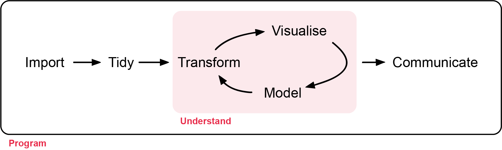

ECS200 Research Methods in Ecology
School of Environmental and Conservation Sciences
All workshop materials are provided in the GitHub repository ECS200, and the contents were developed by Nicholas Wu and Alethea Rea.
Welcome
The ECS200 - Research Methods in Ecology workshops go through the steps of a typical research project, which look something like Figure 1.

First, you must import your data into R (Introduction to R). This usually means loading data stored in a file into a data frame in R. If you can’t get your data into R, you can’t analyse it!
Once your data are imported, check their quality (Week 1) and tidy them (Week 2). Tidying means putting the data into a consistent format where each column is a variable and each row is an observation. This makes analysis far easier: you can focus on answering questions rather than reformatting data for each new task.
Next, you will often transform your data (Week 2): for example, keeping observations from one site, creating new variables (e.g. speed from distance and time) or calculating summaries (e.g. counts or averages). Together, tidying and transforming are called wrangling, because getting data into a usable form can feel like a fight!
Once you have tidy, relevant data, you will use two main tools: visualisation and modelling. They complement each other, and most analyses move back and forth between them.
Visualisation (Weeks 3 and 4) is fundamental. A good plot can reveal unexpected patterns, raise new questions, or show that you are asking the wrong question or need better data.
Models (Weeks 5 to 13) answer clearly defined questions. Models are mathematical, so they scale well, but they come with assumptions that you need to check. Each modelling workshop follows the same five steps:
- Background: what is the model doing? (with an interactive app)
- Visualise: plot the data as a sanity check.
- Check assumptions: is the model appropriate for these data, and what should you do if it is not?
- Model: fit the model in R.
- Interpret: what do the numbers mean, and how do you write them up?
The final step is communication. Even the best model or figure is useless unless you can explain your findings clearly to others.
Surrounding all of these is programming. You will use code at every step. You don’t need to be an expert programmer, but better coding skills will help you work faster and solve problems more easily.
How the workshops work
Each workshop is 2 hours. Spend about the first hour working through the page (reading, running the code and doing the 🧪 exercises), and the second hour on the assessment. Each assessment is an R script template that you download, complete and submit before the end of class.
The optional workshops (time series, spatial data and movement data) are not assessed, but instead provide additional learning experience if you want to work with environmental, occupancy, and movement data.
Unit learning objectives
At the end of the unit, students should be able to:
- Design ecological research using appropriate sampling strategies and analytical methods.
- Apply appropriate statistical methods to test ecological hypotheses.
- Apply R programming to process, analyse and visualise ecological datasets to professional standards.
- Critically evaluate the strengths and limitations of research designs under different ecological conditions.
- Communicate the findings of ecological research to professional standards.
When using R, make sure your code works on both your personal laptop and the Murdoch desktops. The mid-semester test will ONLY use Murdoch desktops (no laptops allowed). The R practicals and your research report can be done on your personal laptop or on the Murdoch desktops.
Schedule
If you are not familiar with R, please work through the Introduction to R before the first workshop.
| Week | Topic | Date | Time | Room |
|---|---|---|---|---|
| 1 | Quality check | 25-Feb | 13:30–16:30 | 450.2.001 |
| 2 | Tidy data | 04-Mar | 13:30–16:30 | 450.2.001 |
| 3 | Descriptive statistics and figures | 11-Mar | 13:30–16:30 | 450.2.001 |
| 4 | Diversity indices | 18-Mar | 13:30–16:30 | 450.2.001 |
| 5 | Statistical inference: t-tests and ANOVA | 25-Mar | 13:30–16:30 | 450.2.001 |
| 6 | Study week: Optional: time series | – | – | – |
| 7 | Linear and multiple regression | 08-Apr | 13:30–16:30 | 450.2.001 |
| 8 | GLMs: count data | 15-Apr | 13:30–16:30 | 450.2.001 |
| 9 | Study week: Optional: spatial data | – | – | – |
| 10 | Mid-semester test. Optional: movement data | 29-Apr | 13:30–16:30 | 450.2.001 |
| 11 | GLMs: binary data | 06-May | 13:30–16:30 | 450.2.001 |
| 12 | Mixed-effects models | 13-May | 13:30–16:30 | 450.2.001 |
| 13 | Survival analysis | 20-May | 13:30–16:30 | 450.2.001 |
The appendices cover The Islands (the virtual environment for your group project) and Research Design, including how to choose your sample size.
Contact
If you spot an error in the workshop material, please let the unit coordinator know at nicholas.wu@murdoch.edu.au.